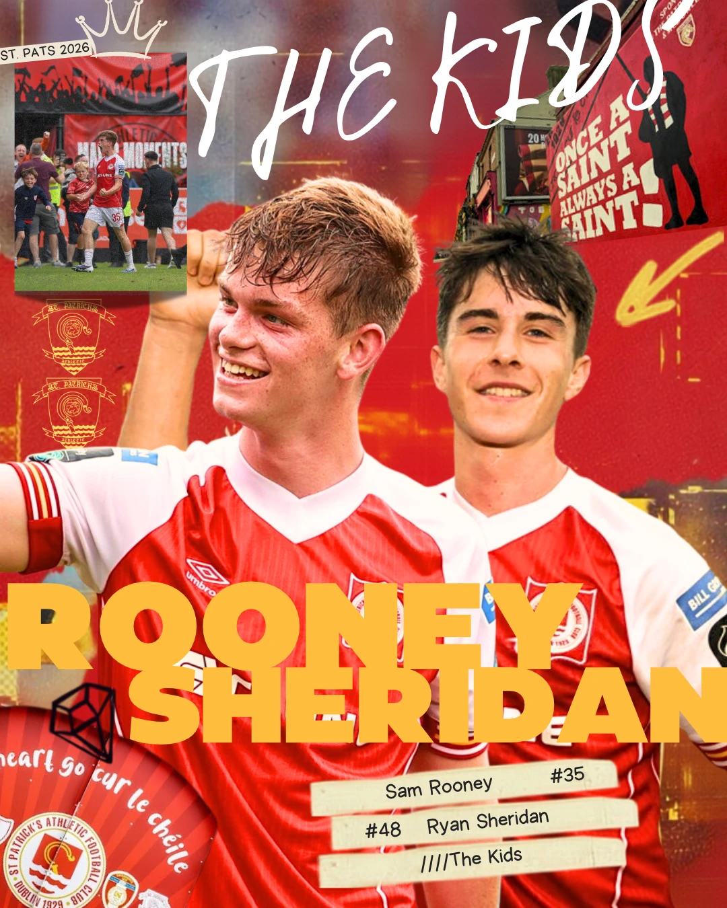
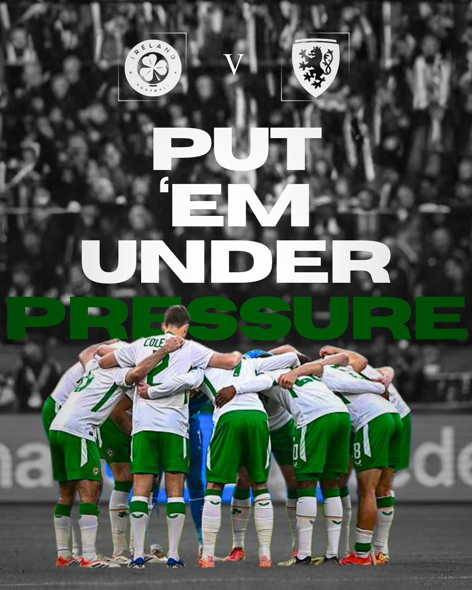
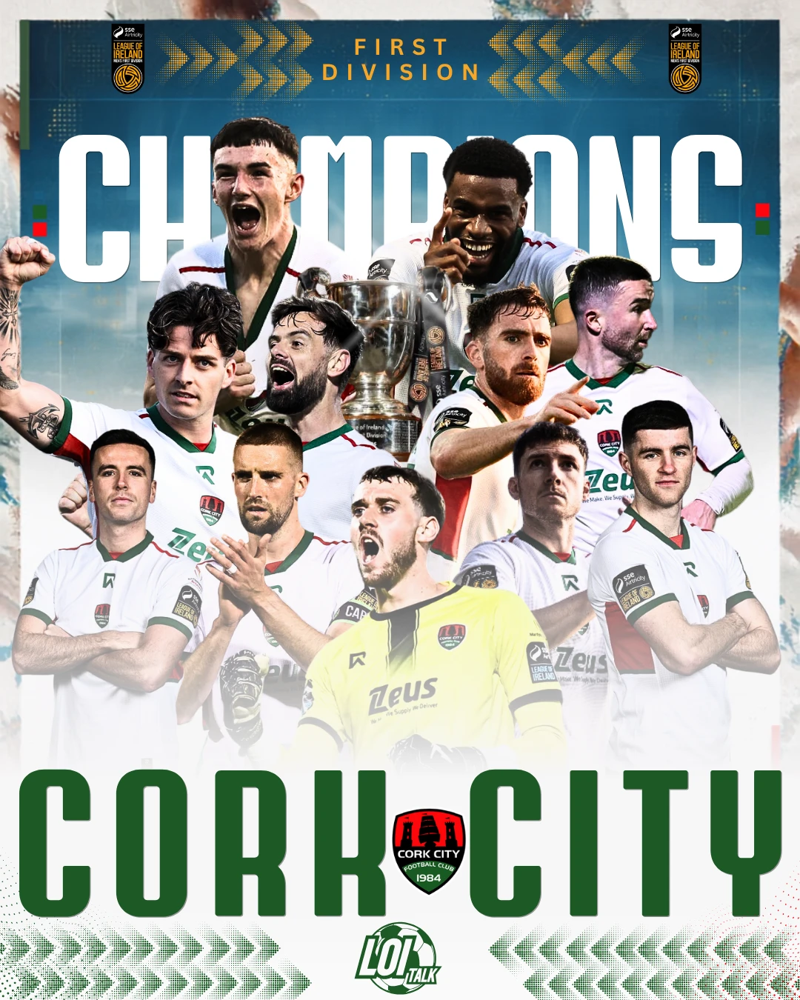
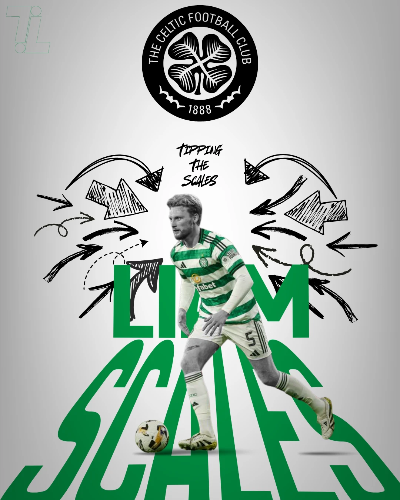
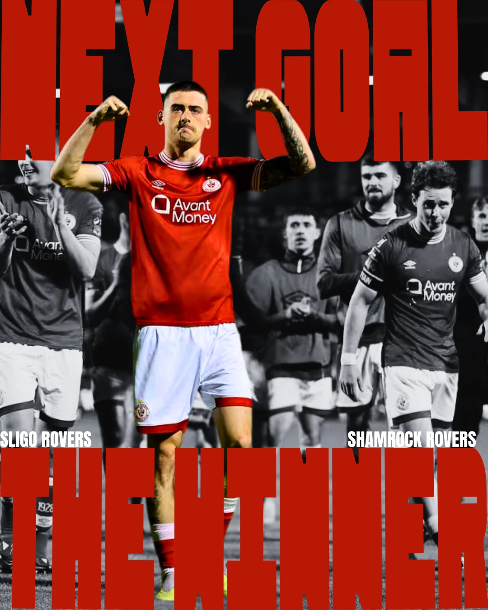
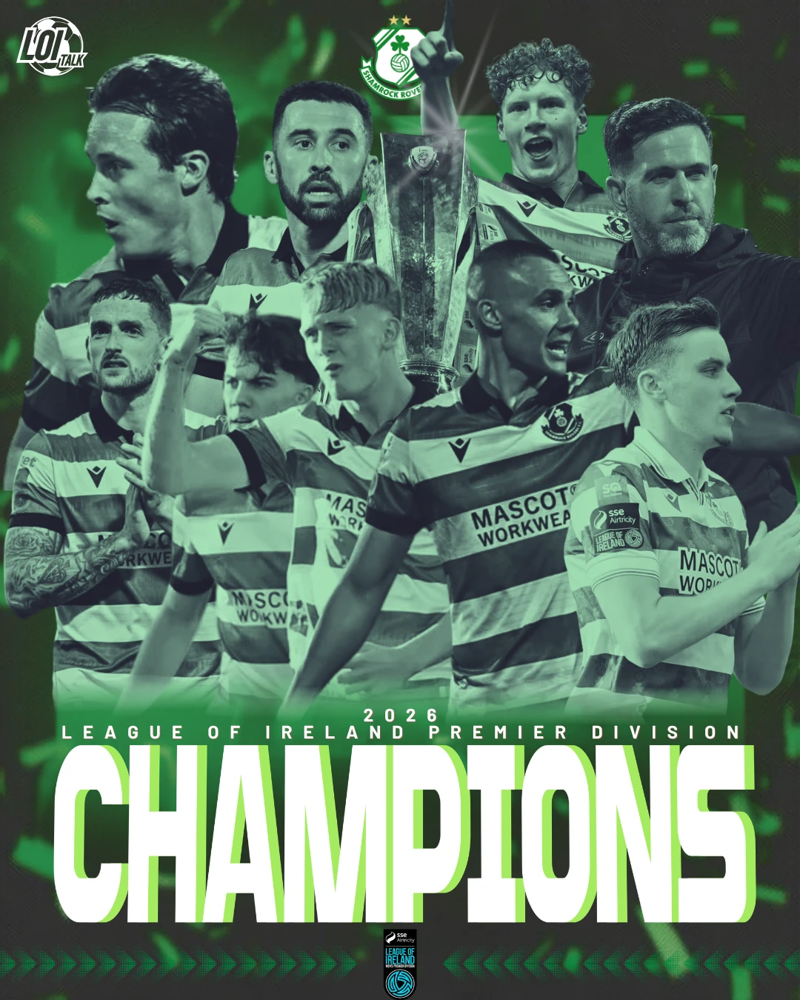
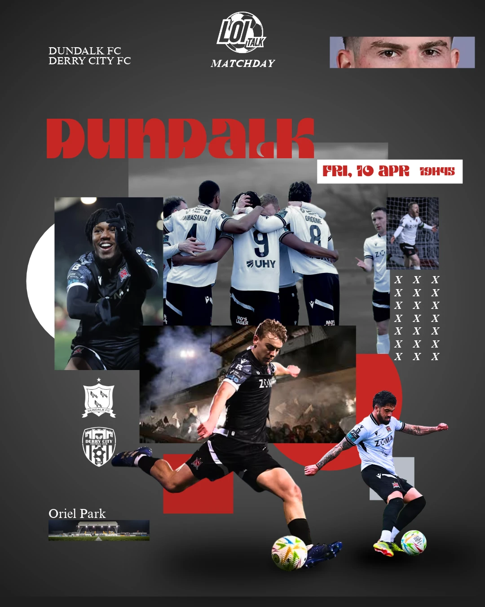

Results, not just
nice graphics.
I've worked on the writing, graphics and planning behind football accounts and publications. Some projects were about building an audience. Others were about making the content better, or simply finding a way of saying something interesting about football.
Across these projects, I've worked on the less visible parts too: deciding what audiences want to hear, planning a publishing schedule, producing the content and keeping a consistent voice. My strengths are football knowledge, storytelling, digital communication and practical delivery.
Featured project
Academy content.
8,000+ followers.
Academy football deserves proper coverage. During my involvement with Bohemians Academy, its Instagram following grew from zero to more than 8,000 in less than three months.
My contribution covered content ideas, creative graphics and ongoing publishing support. Academy football has strong stories, but it takes consistent coverage to bring them to an audience beyond the players and their families.
Period: academy launch and first three months of the account. Reported account growth during the period I was involved. This is an account-level milestone, not a claim that I achieved it alone.
Academy social media, content and audience development
Football content, creative graphics and ongoing publishing support
Instagram following grew from zero to over 8,000 in less than three months
How I approached it
- Objective
- Give academy football a stronger, recognisable online presence and reach families, supporters and the wider club community.
- My role
- Supported content ideas, design and regular publishing as part of the academy media effort.
- Strategy & execution
- Make academy stories visible through repeatable graphics, timely updates and a consistent football-focused presentation.
- Result & evidence
- Account-wide milestone of 8,000+ followers in under three months during my involvement. Shared team outcome; analytics screenshots can be supplied to support the historical figure.
Head of Content & Media · Former role
Three editions a week.
And an audience to build.
I started as a writer before becoming Head of Content & Media at Boardroom Ball. I oversaw the content and media output, from planning and writing football business stories to putting together the newsletter and keeping the publishing schedule moving. Three newsletters every week is a decent way to learn what readers actually want.
Historical newsletter figures from my time in the role; figures are approximate and refer to the reporting period, not current performance.
The editorial brief
- Objective
- Build a football business newsletter that readers would return to throughout the week.
- My role
- Writer, then newsletter editorial lead from January to April 2026.
- Strategy & execution
- Plan and produce three editions a week, maintain a consistent editorial voice and cover the financial and operational side of football. Worked around commercial partner exposure including Classic Football Shirts and Champions Travel.
- Results
- Subscriber milestone above 600 by March 2026 and a reported 56% open rate during the role. Historic figures, not current performance.
Independent publishing
Something of
my own.
Touchline is where the writing, design and football business side of my work all ended up in the same place. I've written the pieces, made the covers, planned the posts and spent far too much time figuring out what should go where.
It's given me the freedom to try different ideas, from League of Ireland reporting to club strategy, tactical features and football culture. The work hasn't always looked the same, which is probably a good thing.
Explore my writing ↗See the design work ↗



Selected designs from my creative graphics archive. These illustrate my visual work rather than an exact record of any individual social campaign.
Building the publication
- Objective
- Establish a distinct home for informed, accessible football business, tactics and culture coverage.
- My role
- Founder, editor, writer and creative lead.
- Strategy & execution
- Developed editorial categories, content cadence, branding and distribution across Substack and social platforms.
- Evidence
- Published features and the Touchline Tactics series demonstrate the output. Audience metrics vary by platform and date, so this case study does not combine them into a single headline figure.
TALK.



Head of Content & Media · Current role
Closer to the
Irish game.
I’m currently Head of Content & Media at LOI Talk. I oversee the editorial and media work alongside writing, social content and graphics. A lot of it is about keeping up with the League of Ireland, spotting stories that might otherwise slip by and finding the right way to put them in front of people.
It's also given me the chance to cover matches, develop short-form football content and work with stories from across both divisions. There's certainly never a shortage of things happening in Irish football.
See selected articles ↗League-wide publishing
- Objective
- Make League of Ireland news and original stories easy to follow on a consistent schedule.
- My role
- Founder and content/editorial lead, coordinating coverage and publishing.
- Strategy & execution
- Regular morning updates, editorial planning, match coverage, original articles and short-form content built around the domestic game.
- Evidence
- Examples of articles and social graphics appear in the writing and creative sections. No unsupported reach or growth claims are attributed here.
Writing. Graphics.
Planning. Publishing.
My work combines football knowledge with content strategy, publishing, audience development and design. For club business and communications roles, the most relevant examples are the growth, consistency and editorial decision-making behind these projects.